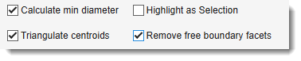

Threshold Analysis for Objects¶
Overview¶

The Threshold Analysis for Objects plugin in Microscopy Image Browser (MIB) performs shape and intensity threshold-based analysis of objects in microscopy images, calculating metrics such as size, intensity, or shape.It supports triangulation of object centroids, visualization of results, and export to Excel or MATLAB formats, making it useful for quantitative studies of cellular structures.
GUI Components¶
Selection of materials and threshold settings¶

use this dropdown to select material of the model for analysis.
Alternatively, it is possible to provide indices of materials using an editbox
on the right-hand side of the dropdown.
specify index of the color channel to be used for intensity calculations and thresholding
specify method to threshold the objects:
- Absolute provide thresholding value in the field. All values that are above this value will be assigned to the Mask layer after press of the
- Relative allows to choose between Otsu and Median automatic thresholding options. Values above detected threshold will be assigned to the Mask layer. Note! it is possible to modify the threshold value by offsetting it using the editbox on the right-hand side.
additionally applies erosion and dilation operation to minimize thresholding noise and keeping only large thresholded structures.
Application of Erode+Dilate

select connectivity of the object detection, when 4
objects that are touching each other in the diagonal orientation will be split, otherwise (when 8) fused together.
Additional options¶

use this option to measure average thickness of objects. When is checked, the point used to measure mean thickness for each object are shown as the Selection layer. Use Shift+C to clear it after evaluation.
for multiple objects calculate the triangulated mesh where each edge in this mesh contains distance to the closest other object. This can be useful for analysis of distances between the objects. can be used to remove edges that are connecting objects at the edges of the image producing too large connecting lines.
Remove free boundary facets example

Export results¶
generate a plot with results. It is possible to specify to show the plot in a specific MATLAB window and start for automatic printing of the figure.
Example of the figure with results

export results to the main MATLAB workspace as
ThreshAnalysis and ThreshAnalysisGraph structures.
Fields
ThreshAnalysis has following fields:
colCh
materialId
materialNames
absoluteThresholdValue
relativeThresholdMethod
thresholdOffsetValue
thresholdPolicy
ErodeDilate
pixSize
datasetName
modelName
triangulatePoints
triangulateRemoveFreeBoundary
objConnectivity
objId
sliceNo
objMaterialName
CentroidX
CentroidY
FirstAxisLength
SecondAxisLength
Eccentricity
Median
TotalArea
SliceName
ThresholdedArea
objThresholdValues
RatioOfAreas
minDiameter
minDiameterAverage
ThreshAnalysisGraph is a graph object with the fillowing fields:
save results in Microsoft Excel format .xls
save results in MATLAB format .mat
save results of object triangulation
in MATLAB format .mat, Amira, or as Excel sheet.
specify output filename for results.
use this button to regenerate output filename relative to the open dataset. It is useful when processing multiple datasets one after another.
Start calculations¶
Press the button to perform calculations.
Usage¶
Access the plugin via:
Ribbon → Plugins → Organelle Analysis → Thres Analysis for Objects.
Follow these steps to analyze objects:
Load Image:
Prepare Model
- Create or load a model with segmented objects via
Segmentation table -> Load. - Use MIB’s
Segmentationtools (e.g.,Brush,Threshold,Segment-anything model) to segment objects.
Segmentation model

Start the plugin:
Ribbon → Plugins → Organelle Analysis → Thres Analysis for Objects.- Define suitable settings and export parameters
Run Analysis:
- Click to segment objects and compute metrics.
- Results appear in MIB’s Image Document panel or exported files.
Review Results:
Snapshot with results

Snapshot with Excel output table

Credits¶
- Author: Ilya Belevich, University of Helsinki (ilya.belevich@helsinki.fi)
- Part of: Microscopy Image Browser (https://mib.helsinki.fi)
Back to MIB | User Interface | Plugins | Organelle Analysis